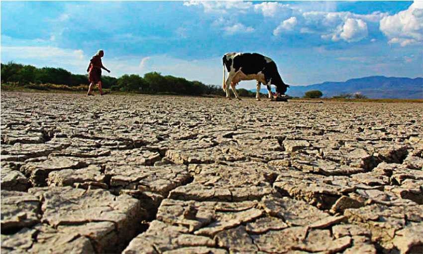

Los efectos del calentamiento global incluyen efectos ambientales, sociales, económicos y de salud. Algunos ya se observan y otros se esperan a corto, mediano o largo plazo (con diverso grado de certeza); algunos son localizados y otros globales; algunos son graduales y otros abruptos; algunos son reversibles y otros no; algunos pueden tener consecuencias positivas, pero la mayoría son adversos.
Los efectos ambientales incluyen el aumento de la temperatura oceánica, la acidificación del océano, el retroceso de los glaciares, el deshielo ártico, la subida del nivel del mar, una posible parada de la circulación oceánica, extinciones masivas, desertificación, fenómenos meteorológicos extremos, cambios climáticos abruptos y efectos a largo plazo.
Los efectos económicos y sociales incluyen cambios en la productividad agrícola, expansión de enfermedades, una posible apertura del paso del Noroeste, inundaciones, impacto sobre pueblos indígenas, migraciones ambientales y guerras climáticas.
Los efectos futuros del cambio climático variarán dependiendo de las políticas de cambio climático y el desarrollo social. Las dos principales políticas para enfrentar el cambio climático son la reducción de las emisiones de gases de efecto invernadero (mitigación) y la adaptación a sus efectos. La ingeniería climática es otra opción. Las políticas en el corto plazo podrían afectar significativamente los efectos a largo plazo. Políticas de mitigación estricta podrían limitar el calentamiento global para 2100 en cerca de 2 °C o menos, en relación a niveles preindustriales. Sin mitigación, un aumento en la demanda energética y el uso amplio de combustibles fósiles podrían llevar a un calentamiento global de alrededor de 4 °C. Con magnitudes superiores sería más difícil adaptarse e incrementaría el riesgo de impactos negativos.
Fenómenos meteorológicos extremos. Los modelos climáticos y las tendencias observadas muestran que con el calentamiento global el planeta experimentará más fenómenos extremos. Los récord térmicos altos sobrepasan a los bajos y algunos tipos de eventos extremos, como calor extremo, precipitación intensa y sequía, se han vuelto más frecuentes y severos en las décadas recientes. Algunos estudios trazan una conexión entre la rápida alza de las temperaturas árticas y la consiguiente desaparición de la criósfera con los fenómenos extremos en las latitudes medias.
La subida del nivel del mar es un fenómeno que se ha observado desde comienzos del siglo XX. El ascenso de 1900 a 2016, ha sido de 16-21 cm. Desde 1993 se observó una aceleración a un promedio entre 2,6 mm y 2,9 mm ± 0,4 mm por año. En las últimas dos décadas se ha acelerado..
Esta aceleración se debe mayormente al calentamiento global de origen antropogénico, que está provocando una expansión térmica de las aguas oceánicas y un deshielo en las zonas polares y glaciares. Si esta aceleración se mantiene constante, el aumento del nivel del mar entre 2000 y 2100 sería de 26-55 cm en caso de producirse pronto un recorte en las emisiones de gases de efecto invernadero, o de 52-98 cm, si dichos recortes no tienen lugar, e incluso más.
La Extinción masiva del Holoceno es un nombre dado a la extinción sostenida y generalizada de especies que ocurre en el último período geológico, el Holoceno. La extinción abarca desde el mamut hasta el dodo, incluyendo incontables especies que desaparecen cada año.
La extinción masiva del Holoceno comprende la notoria desaparición de mamíferos grandes, conocidos como megafauna, cerca del final de la última glaciación entre 9.000 y 13.000 años atrás. Tales desapariciones se han considerado como consecuencia del cambio climático, como resultado de la diseminación proliferación del humano moderno, o ambas.
La tasa de extinción ha aumentado drásticamente en los últimos 50 años. No existe acuerdo generalizado sobre el considerar estas extinciones como un evento aislado o meramente como parte de un proceso que se agudiza. Únicamente durante estos años recientes, las plantas han sufrido también extinciones masivas.
La extinción masiva del Holoceno se caracteriza de manera significativa por la presencia de factores de origen humano y su extremadamente corta duración en términos geológicos. (decenas a miles de años), en comparación a otros eventos de extinción.
Cambio climático abrupto. Es un cambio en el sistema climático a escala mundial, y que tiene lugar durante un período muy corto de tiempo desde el punto de vista geológico y climatico (unas décadas o menos). Este cambio produce interrupciones significativas en los sistemas naturales, originando perturbaciones sociales y económicas, capaces de poner en riesgo la humanidad.
El IPCC afirmó que tal calentamiento global "podría dar lugar a algunos efectos que son abruptos o irreversibles".
En un artículo en Science, Alley et al. dijeron "es concebible que los forzantes del cambio climático de origen humano, están aumentando la probabilidad de grandes eventos, abruptamente. Si tal evento se repitiese, los impactos económicos y ecológicos pueden ser grandes y potencialmente graves."
Efectos sociales
Se han detectado en todo el mundo los efectos del cambio climático en los sistemas humanos, en su mayoría debido al calentamiento o cambios en los patrones de precipitación, o ambos. La producción de trigo y maíz a nivel mundial se ha visto afectada por el cambio climático. Pese a que la productividad agrícola se ha incrementado en algunas regiones de latitudes medias, como el Reino Unido y en el noreste de China, las pérdidas económicas debidas a fenómenos meteorológicos extremos han aumentado a nivel mundial. Ha habido una mortalidad vinculada al cambio de frío a calor en algunas regiones como resultado del calentamiento. Sus efectos se observan en más regiones que antes, en todos los continentes y a lo largo de zonas oceánicas.
Los futuros impactos sociales del cambio climático serán desiguales. Se espera que muchos riesgos aumenten con mayores magnitudes de calentamiento global. Todas las regiones están en riesgo de sufrir impactos negativos. Las zonas de baja latitud y de menor desarrollo se enfrentan a los mayores peligros. Un estudio de 2015 concluyó que el crecimiento económico (producto interno bruto) de los países más pobres se verá perjudicado por el calentamiento global proyectado mucho más de lo que se creía anteriormente.
Un metaanálisis de 56 estudios concluyó en 2014 que cada grado de temperatura adicional aumentará la violencia hasta un 20 %, la que incluye riñas, crímenes violentos, agitación social o guerras.Los ejemplos de impactos incluyen:
En ausencia de un ajuste significativo de cómo miles de millones de humanos llevan a cabo sus vidas, es probable que partes de la Tierra se vuelvan inhabitables y otras partes horriblemente inhóspitas, tan pronto como a fines de este siglo. Miami, Bangladesh y otras bajas áreas costeras podrían perderse en este siglo. Ciudades como Karachi y Kolkata serán inhabitables.